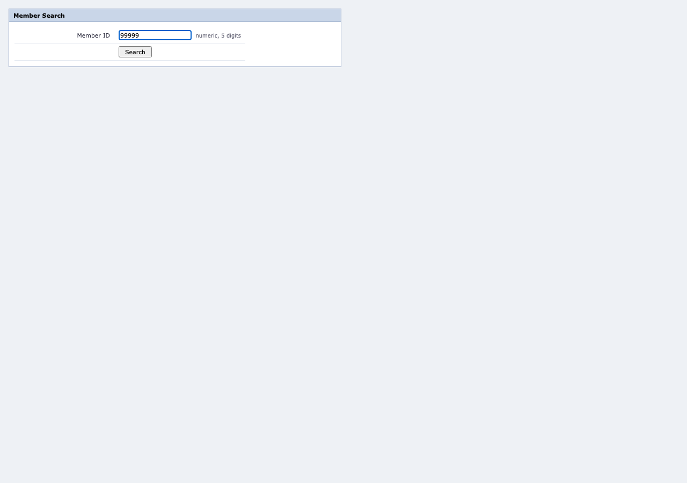

Read a member's current savings balance business outcome
Run gate-2-business-outcome · capability v1.0.0
Business outcome:
no_such_member
This is an answer the caller asked for, not a failure. The run completed successfully and reported what the application said.
5
steps
0
retries
0
recoveries
0
degraded
0
interventions
1.4s
duration
0
model calls
Model calls are zero by construction on the replay path: the module is forbidden from importing a model SDK, a source scan re-checks it, and this counter is asserted in the test suite. Determinism that is only promised is not determinism.
Steps
1. Enter the operator ID on the sign-in form ok


2. Enter the operator password ok


3. Submit the sign-in form ok

4. Type the member ID into the search field ok


5. Run the member search ok

Event log
| # | time | kind | step | what happened, and why |
|---|---|---|---|---|
| 1 | 14:52:34.750 | note | The application answers "no member record found". That is the answer the caller asked for, so it is a business outcome and it exits 0 - not a failure. | |
| 2 | 14:52:34.751 | run.start | Replaying cap.member.read_savings_balance v1.0.0 (draft), with no model in the loop. | |
| 3 | 14:52:34.769 | observe | Entered at http://localhost:64823/frame/. | |
| 4 | 14:52:34.769 | step.begin | s1 | Step 1: Enter the operator ID on the sign-in form |
| 5 | 14:52:34.782 | locator.resolve | s1 | Found the Operator ID field via tier 1. |
| 6 | 14:52:34.782 | policy.check | s1 | Policy allows this write_reversible action. |
| 7 | 14:52:34.787 | action | s1 | Typed into on "Operator ID". |
| 8 | 14:52:35.125 | checkpoint | s1 | Checkpoint held: (nothing asserted) |
| 9 | 14:52:35.157 | step.end | s1 | Step 1 ok. |
| 10 | 14:52:35.157 | step.begin | s2 | Step 2: Enter the operator password |
| 11 | 14:52:35.186 | locator.resolve | s2 | Found the Password field via tier 1. |
| 12 | 14:52:35.186 | policy.check | s2 | Policy allows this write_reversible action. |
| 13 | 14:52:35.193 | action | s2 | Typed into on "Password". |
| 14 | 14:52:35.522 | checkpoint | s2 | Checkpoint held: (nothing asserted) |
| 15 | 14:52:35.569 | step.end | s2 | Step 2 ok. |
| 16 | 14:52:35.569 | step.begin | s3 | Step 3: Submit the sign-in form |
| 17 | 14:52:35.583 | locator.resolve | s3 | Found the Sign In button via tier 1. |
| 18 | 14:52:35.583 | policy.check | s3 | Policy allows this write_reversible action. |
| 19 | 14:52:35.629 | action | s3 | Clicked on "Sign In". |
| 20 | 14:52:35.645 | wait | s3 | The expected change happened after 0ms. |
| 21 | 14:52:35.645 | checkpoint | s3 | Checkpoint held: "the Member ID search field" is present |
| 22 | 14:52:35.658 | step.end | s3 | Step 3 ok. |
| 23 | 14:52:35.658 | step.begin | s4 | Step 4: Type the member ID into the search field |
| 24 | 14:52:35.673 | locator.resolve | s4 | Found the Member ID search field via tier 1. |
| 25 | 14:52:35.673 | policy.check | s4 | Policy allows this write_reversible action. |
| 26 | 14:52:35.678 | action | s4 | Typed into on "Member ID". |
| 27 | 14:52:36.004 | checkpoint | s4 | Checkpoint held: (nothing asserted) |
| 28 | 14:52:36.026 | step.end | s4 | Step 4 ok. |
| 29 | 14:52:36.026 | step.begin | s5 | Step 5: Run the member search |
| 30 | 14:52:36.059 | locator.resolve | s5 | Found the Search button via tier 1. |
| 31 | 14:52:36.059 | policy.check | s5 | Policy allows this read action. |
| 32 | 14:52:36.104 | action | s5 | Clicked on "Search". |
| 33 | 14:52:36.121 | wait | s5 | The expected change happened after 0ms. |
| 34 | 14:52:36.121 | outcome.detected | The application answered "no_such_member": No member with that ID exists at this institution. This is a legitimate result, not a failure. | |
| 35 | 14:52:36.122 | run.end | Run ended with business outcome "no_such_member". |